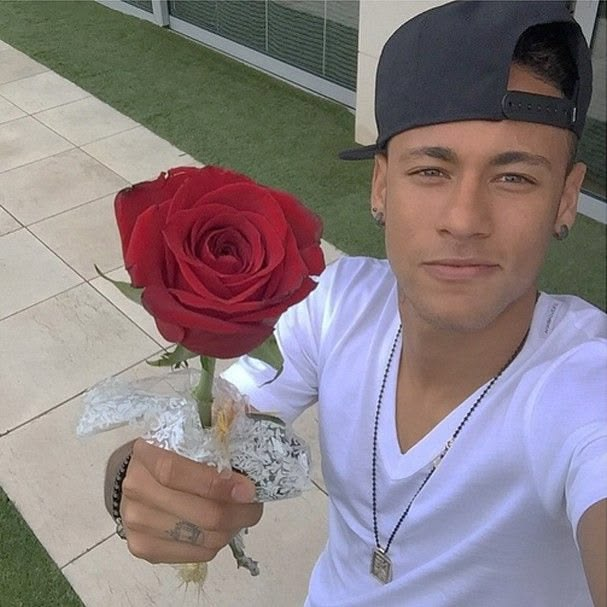
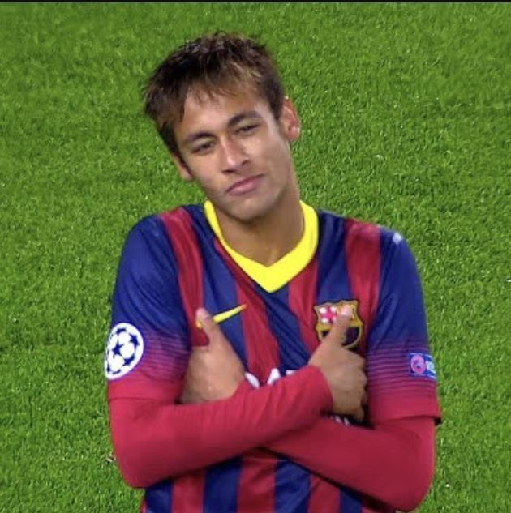
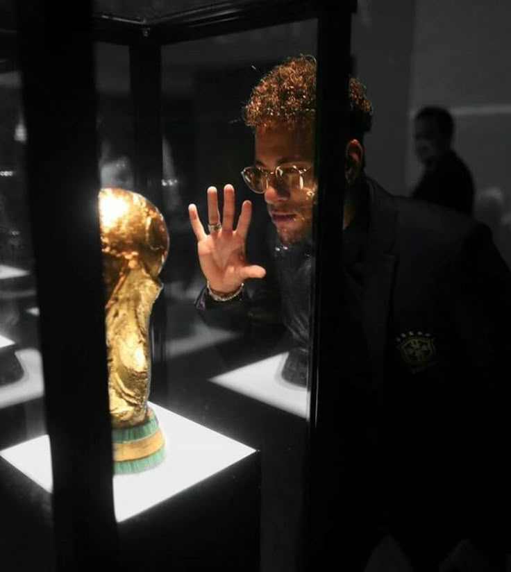
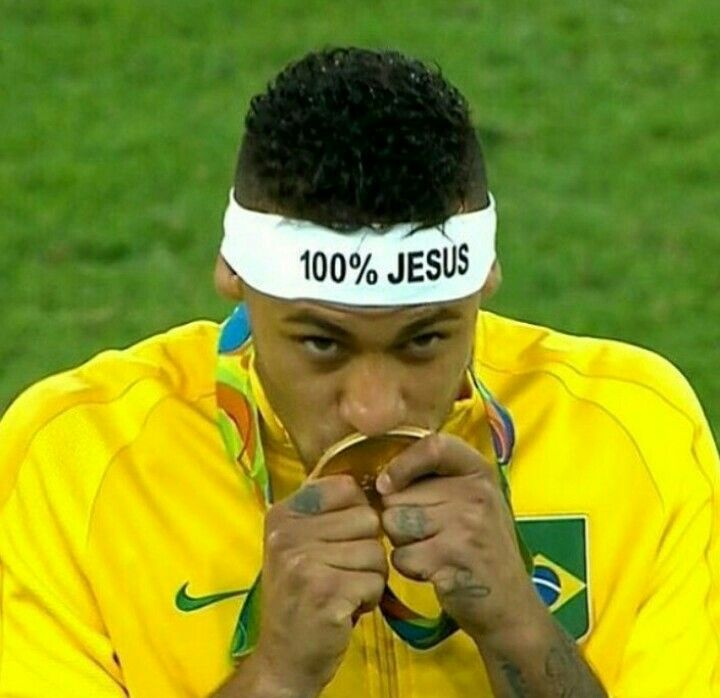
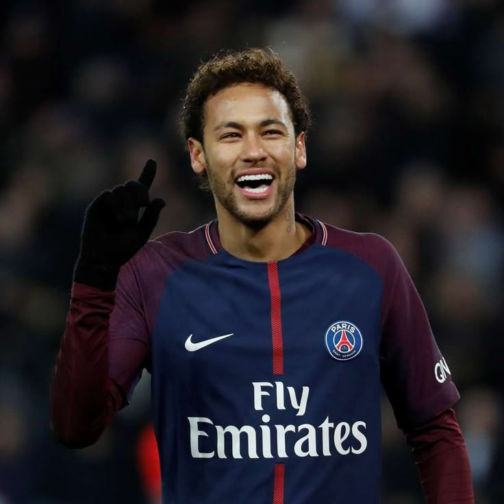

Origem
Neymar da Silva Santos Júnior nasceu em Mogi das Cruzes, São Paulo, em 5 de fevereiro de 1992.

Origem
Neymar da Silva Santos Júnior nasceu em Mogi das Cruzes, São Paulo, em 5 de fevereiro de 1992.
Início no Santos
Neymar começou sua carreira profissional no Santos e ganhou destaque ainda jovem pelo drible, velocidade e criatividade.

Estilo de jogo
Neymar ficou conhecido por seus dribles, habilidade no um contra um, passes criativos e facilidade para decidir jogadas.

Libertadores
Em 2011, Neymar foi um dos principais nomes do Santos na conquista da Copa Libertadores da América.
Barcelona
No Barcelona, Neymar viveu uma fase marcante e conquistou títulos importantes, incluindo a Liga dos Campeões de 2015.

Seleção Brasileira
Pela Seleção Brasileira, Neymar se tornou um dos jogadores mais importantes de sua geração, participando de Copas e grandes torneios.

Ouro Olímpico
Em 2016, Neymar ajudou o Brasil a conquistar o primeiro ouro olímpico do futebol masculino, no Rio de Janeiro.

PSG
Em 2017, Neymar foi para o Paris Saint-Germain e passou a disputar o futebol francês como uma das estrelas do clube.